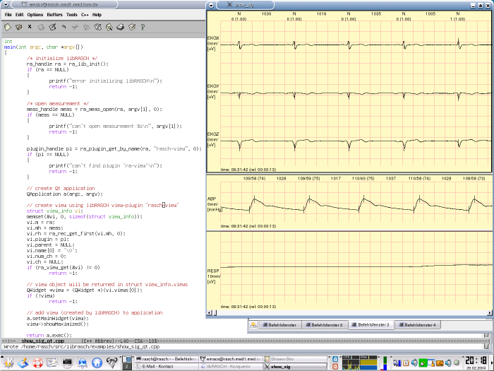

Sourcecode
#include <stdio.h>
#include <qapplication.h>
#include <qwidget.h>
#include <ra.h>
int
main(int argc, char *argv[])
{
/* initialize libRASCH */
ra_handle ra = ra_lib_init();
if (ra == NULL)
{
printf("error initializing libRASCH\n");
return -1;
}
/* open measurement */
meas_handle meas = ra_meas_open(ra, argv[1], 0);
if (meas == NULL)
{
printf("can't open measurement %s\n", argv[1]);
return -1;
}
plugin_handle pl = ra_plugin_get_by_name(ra, "rasch-view", 0);
if (pl == NULL)
{
printf("can't find plugin 'ra-view'\n");
return -1;
}
// create Qt application
QApplication a(argc, argv);
// create view using libRASCH view-plugin 'rasch-view'
struct view_info vi;
memset(&vi, 0, sizeof(struct view_info));
vi.m = ra;
vi.mh = meas;
vi.rh = ra_rec_get_first(vi.mh, 0);
vi.plugin = pl;
vi.parent = NULL;
vi.name[0] = '\0';
vi.num_ch = 0;
vi.ch = NULL;
if (ra_view_get(&vi) != 0)
return -1;
// view object will be returned in struct view_info.views
QWidget *view = (QWidget *)(vi.views[0]);
if (!view)
return -1;
// add view (created by libRASCH) to application
a.setMainWidget(view);
view->showMaximized();
return a.exec();
} // main()
Screenshot of the program

|